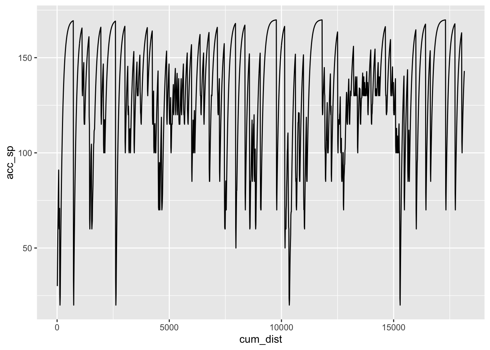
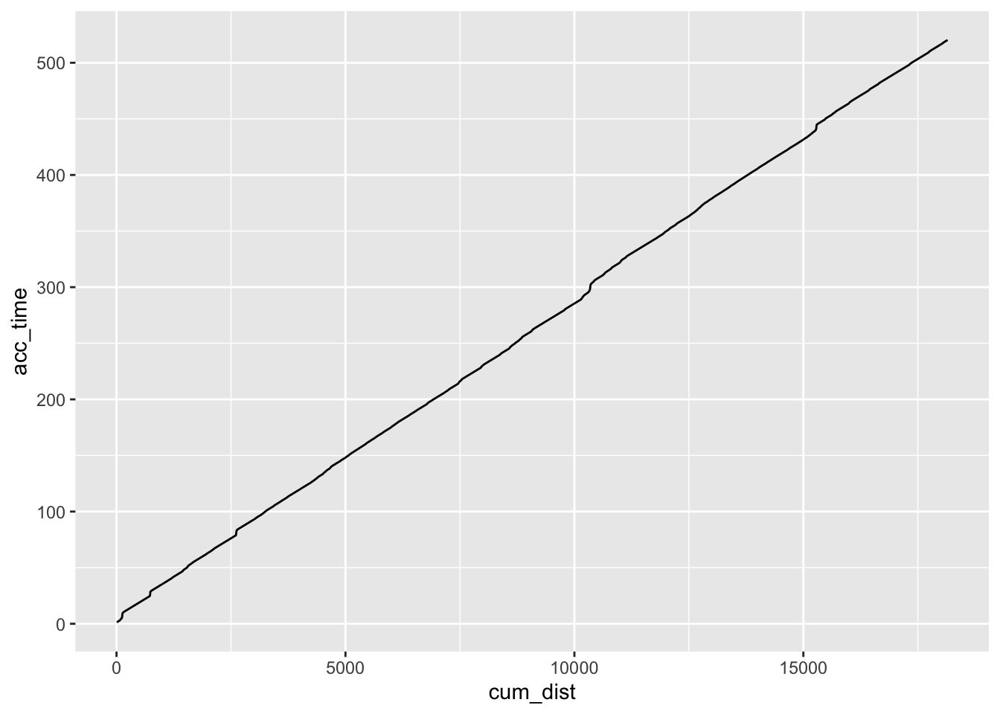

10 Interpolation Using A Route Speed Model
Based on the curvature of the route, the speed model gives us a crude estimate of how long it takes to get between two points. If the route is a flat straight between the points, we’ll travel 1km in much less time than if the route it tight and twisty.
The simple approxfun() interpolator uses a linear model to interpolate times between actual time points, but we might be able to improve interpolated estimates using a non-linear model based on a speed model generated over the route based on the route curvature.
- identify distance into stage required (
desired_d) - find distance into stage for each
- get consecutive telemetry points between which desired distance lays (
in_d,out_d,in_t,out_t)
> l = c(1.1,2.1,3.1,4.1,5.1)
> c(l[findInterval(3, l)], l[findInterval(3, l)+1])
[1] 2.1 3.1
> c(l[findInterval(1, l)], l[findInterval(1, l)+1])
[1] 1.1
> c(l[findInterval(11, l)], l[findInterval(11, l)+1])
[1] 5.1 NA- get speed model
- get model time at points (in_mt=model(in_d), out_mt=model(out_d), desired_mt=model(desired_d))
- get interpolated normalised model time between points, desired_nt = (desired_mt - in_mt)/(out_mt - in_mt)
- get predicted time desired_t = desired_nt*(out_t - in_t) + in_t
10.1 Creating a Route Speed Model
In the To See The Invisible rally pacenotes tutorial series by David Nafría, corners are given a particular severity based on curvature. Simple models of expected speeds for corners of a particular severity are also described for different classes of rally car.
We can use this approach to create a simple speed model based on curvature of the rally route. Using the expected cornering speed as a target speed and a simple acceleration model, as well as theoretical maximum speed, we can accelerate the car into and out of each corner based and generate a speed model as a result.
For more on analysing and visualising rally stage routes, see Visualising WRC Rally Stages With rayshader and R.
The rLFT processing linear features R package provides a handy tool for modeling curvature along each point of a route in the form of a boundary convexity tool (bct()). The curvature of a moving segment along the route is determined, along with the center of curvature and a convexity measure.
library(rLFT)
# The step dist is how far we move the window at each step
stepdist = 10
# The window is the length of the route for which we find the curvature
window = 20
get_route_convexity = function(route_basis_utm, stepdist=10, window=20){
bct(route_basis_utm,
# distance between measurements
step = stepdist,
window = window, ridName = "name") %>%
mutate(dist = (lead(MidMeas)-MidMeas),
cum_dist = cumsum(dist))
}
route_convexity = get_route_convexity(stage_route_utm)## user system elapsed
## 0.180 0.033 0.214
## [1] "Features skipped due to size: "
## logical(0)head(route_convexity, 3)## FID RID MidMeas WindowSize RawConvexity ConvexityIndex
## 1 1 SS7/11 KakaristoHassi 10 20 0.000 0.000
## 2 1 SS7/11 KakaristoHassi 20 20 0.000 0.000
## 3 1 SS7/11 KakaristoHassi 30 20 0.788 0.079
## Sinuosity Midpoint_X Midpoint_Y dist cum_dist
## 1 0.500 400689.0 6857086 10 10
## 2 0.500 400698.6 6857084 10 20
## 3 0.503 400708.3 6857081 10 30Although the boundary convexity tool gives us a convexity measure, we can also create our own curvature metric that corresponds more closely to Nafría’s model. I don’t know how to write vectorised functions properly, so I’ll create a simple function that generates the curvature at a particular point on a route, and then use the Vectorize() helper function to as-if vectorise it for me.
library(devtools)
# The curvature function takes an arc defined over
# x and y coordinate lists
#circlefit, from pracma::
circlefit = function (xp, yp, fast = TRUE)
{
if (!is.vector(xp, mode = "numeric") || !is.vector(yp, mode = "numeric"))
stop("Arguments 'xp' and 'yp' must be numeric vectors.")
if (length(xp) != length(yp))
stop("Vectors 'xp' and 'yp' must be of the same length.")
if (!fast)
warning("Option 'fast' is deprecated and will not be used!",
call. = FALSE, immediate. = TRUE)
n <- length(xp)
p <- qr.solve(cbind(xp, yp, 1), matrix(xp^2 + yp^2, ncol = 1))
v <- c(p[1]/2, p[2]/2, sqrt((p[1]^2 + p[2]^2)/4 + p[3]))
rms <- sqrt(sum((sqrt((xp - v[1])^2 + (yp - v[2])^2) - v[3])^2)/n)
#cat("RMS error:", rms, "\n")
return(v)
}
curvature = function(x,y){
#729181.8, 729186.1, 729190.4
#4957667 , 4957676, 4957685
tryCatch({
# circlefit gives an error if we pass a straight line
# Also hide the print statement in circlefit
# circlefit() returns the x and y coords of the circle center
# as well as the radius of curvature
# We could then also calculate the angle and arc length
circlefit(x,y)[3]
},
error = function(err) {
# For a straight, return the first co-ord and Inf diameter
# Alternatively, pass zero diameter?
c(x[1], y[1], Inf)[3]})
}
curvature2 = function(x1, x2, x3, y1, y2, y3){
curvature(c(x1, x2, x3), c(y1, y2, y3))
}
# The base::Vectorize function provides a lazy way of
# vectorising a non-vectorised function
curvatures_ = Vectorize(curvature2)
curvatures = function(route_convexity){
curvatures_(lag(route_convexity$Midpoint_X),
route_convexity$Midpoint_X,
lead(route_convexity$Midpoint_X),
lag(route_convexity$Midpoint_Y),
route_convexity$Midpoint_Y,
lead(route_convexity$Midpoint_Y))
}This model uses the corner centre measures calculated by the boundary convexity tool to return a radius for the curvature of each segment:
route_convexity$radius = curvatures(route_convexity)We can now generate the cornering speed model. The corner speed model generates several things:
- a corner index,
invisble_ci, which is an integer representing the corner radius; - a notional segment/corner target speed,
invisible_sp.
corner_speed_model = function(route_convexity,
invisible_speeds = c(20, 40, 50, 60, 70, 85,
100, 115, 120, 130, 170),
speed_modifier = 0){
# Provide a simple means of increasing the cornering speeds
invisible_speeds = invisible_speeds + speed_modifier
invisible_bins = c(0, 10, 15, 20, 27.5, 35,
45, 60, 77.5, 100, 175, Inf)
route_convexity$invisible_ci = cut(route_convexity$radius,
breaks = invisible_bins,
labels = 1:(length(invisible_bins)-1),
ordered_result=TRUE)
# Speeds in km/h
#invisible_speeds = c(10, 40, 50, 60, 70, 80,
# 95, 110, 120, 130, 180)
route_convexity$invisible_sp = cut(route_convexity$radius,
breaks = invisible_bins,
labels = invisible_speeds,
ordered_result=TRUE)
# Cast speed as factor, via character, to integer
route_convexity$invisible_sp = as.integer(as.character(route_convexity$invisible_sp))
route_convexity
}Applying the speed model to our route gives us a corner index and notional target speed for each segment:
route_convexity = route_convexity %>% corner_speed_model()
head(route_convexity, 3)## FID RID MidMeas WindowSize RawConvexity ConvexityIndex
## 1 1 SS7/11 KakaristoHassi 10 20 0.000 0.000
## 2 1 SS7/11 KakaristoHassi 20 20 0.000 0.000
## 3 1 SS7/11 KakaristoHassi 30 20 0.788 0.079
## Sinuosity Midpoint_X Midpoint_Y dist cum_dist radius invisible_ci
## 1 0.500 400689.0 6857086 10 10 Inf 11
## 2 0.500 400698.6 6857084 10 20 Inf 11
## 3 0.503 400708.3 6857081 10 30 Inf 11
## invisible_sp
## 1 170
## 2 170
## 3 170We can build up the speed model for the route. At each step we accelerate towards the nominal sector target speed (the invisible_sp value). We can’t accelerate infinitely fast, so our actual target accumulated speed for the segment, acc_sp, is a simple function of the current speed and the notional target speed. We can then calculate the notional time to complete that segment, invisible_time.
acceleration_model = function(route_convexity, stepdist=10,
acc = 0.1, dec = 0.1) {
# Acceleration model
sp = route_convexity$invisible_sp
# Nominal starting target speed
# In we don't set this, we don't get started moving
sp[1] = 30
# Use crude acceleration / brake weights
for (i in 2:(length(sp)-1)) {
# Simple linear model - accumulated speed is based on
# the current speed and the notional segment speed
# Accelerate up
if (sp[i-1]<=sp[i]) sp[i] = (sp[i-1] + acc * sp[i]) / (1+acc)
# Decelerate down
if (sp[i]>sp[i+1]) sp[i] = (dec * sp[i] + sp[i+1]) / (1+dec)
}
route_convexity$acc_sp = sp
route_convexity$acc_sp[length(sp)] = route_convexity$invisible_sp[length(sp)]
# New time model
# Also get speed in m/s for time calculation
meters = 1000
seconds_per_hour = 3600 # 60 * 60
kph_unit = meters / seconds_per_hour
route_convexity = route_convexity %>%
mutate(segment_sp = route_convexity$acc_sp * kph_unit,
invisible_time = dist/segment_sp,
acc_time = cumsum(invisible_time))
# So now we need to generate kilometer marks
route_convexity$kmsection = 1 + trunc(route_convexity$MidMeas/1000)
# We can use this to help find the time over each km
route_convexity
}If we now apply the acceleration model to the route, we can calculate the speed over each segment, and the time taken to complete the segment:
route_convexity = acceleration_model(route_convexity)
head(route_convexity, 3)## FID RID MidMeas WindowSize RawConvexity ConvexityIndex
## 1 1 SS7/11 KakaristoHassi 10 20 0.000 0.000
## 2 1 SS7/11 KakaristoHassi 20 20 0.000 0.000
## 3 1 SS7/11 KakaristoHassi 30 20 0.788 0.079
## Sinuosity Midpoint_X Midpoint_Y dist cum_dist radius invisible_ci
## 1 0.500 400689.0 6857086 10 10 Inf 11
## 2 0.500 400698.6 6857084 10 20 Inf 11
## 3 0.503 400708.3 6857081 10 30 Inf 11
## invisible_sp acc_sp segment_sp invisible_time acc_time kmsection
## 1 170 30.00000 8.333333 1.2000000 1.200000 1
## 2 170 42.72727 11.868687 0.8425532 2.042553 1
## 3 170 54.29752 15.082645 0.6630137 2.705567 1Summing over the segment times (omitting the flying finish which has no specified ongoing segment length) gives us an estimated stage time
anticipated_time = function(route_convexity) {
anticipated_time = sum(route_convexity$invisible_time[1:nrow(route_convexity)-1])
cat(paste0("Anticipated stage time: ", anticipated_time %/% 60,
'm ', round(anticipated_time %% 60, 1), 's' ))
}
anticipated_time(route_convexity)## Anticipated stage time: 9m 11.2sWe can also view the speed model over distance into stage:
ggplot(route_convexity) + geom_line(aes(x=cum_dist, y=acc_sp))
We can also plot the time model into the stage as the accumulated time:
ggplot(route_convexity) + geom_line(aes(x=cum_dist, y=acc_time))